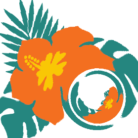

UNIONS weak lensing —
code status.
A live status board for the UNIONS weak-lensing codes — automated scientific checks on the pipelines that produce the shear catalogues. The point is code health, not science results: a place to glance and see whether the guardrails are green. The analyses themselves live on the collaboration wiki. For now there is one code, ShapePipe; sp_validation will follow.
ShapePipe
Shape measurement — the ngmix metacal core. Scientific guardrails run on documented test data: the multiplicative-bias and PSF-fit-prior null tests (in-memory, ideal limit) and the star shear response on a realistic SKiLLS star grid (current code). Each maps onto a decision in the ShapePipe digital twin.
sp_validation
Catalogue validation and cosmology inference — the consumer side that validates the shear catalogues ShapePipe produces. Status checks to follow.